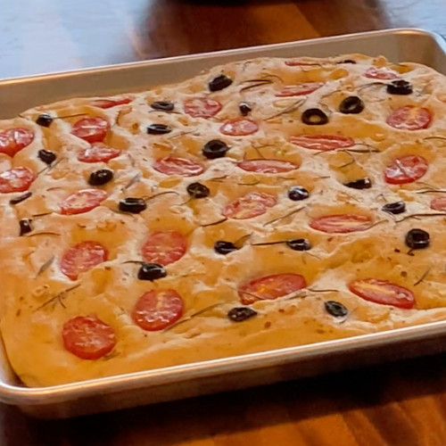

Knead into a dough:
- 5g sugar (1 teaspoon)
- 300g water (1 1/4 cup)
- 8g active dry yeast (1 tablespoon)
- 450g all purpose flour (3 cups)
- 8g salt (1 teaspoon)
Knead till dough is smooth and doesn't stick to the sides of the bowl, adjusting water and flour as needed.
Proof dough in large bowl covered with damp towel for 1 hour.
Coat a baking sheet with olive oil and sprinkle with salt. Flip dough onto baking sheet and gently use your fingers to spread the dough to cover the sheet.
Continue to proof for another 20 minutes then place toppings such as tomatoes, olives, garlic, and herbs. Gently push toppings into the dough then sprinkle top with more salt.
Bake @ 450°F for ~20 min, rotating halfway. Lower tempurature if browning too quikcly.